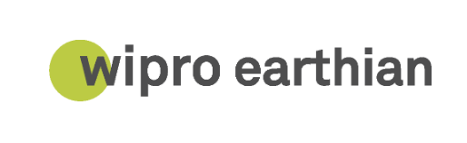

My Projects
A journey through some of the projects I’ve worked on — each one a step forward in my learning path.🚀
Digital Art
Digital drawing on my iPad is my favourite pass time. Click to look at some of my creations.
Procreate • ArtSmart AI Traffic Light
Built an IoT-enabled traffic light that turns green when it detects an ambulance or other special needs vehicles.
Arduino · Python · Sensors · AI/MLKisanGram App
An aserving as a complete solution for crop production and management. Includes Inventory and order management, Satellite Monitoring, Live weather, livestock tracking and chatbot in both hindi and english.
AI/ML • UI/UX

Wipro Earthian Project
1st Position Winner in Earthian Project- Wipro’s Sustainability Education Program for schools and Colleges.
Reseach project on Sustainable Waste Management.